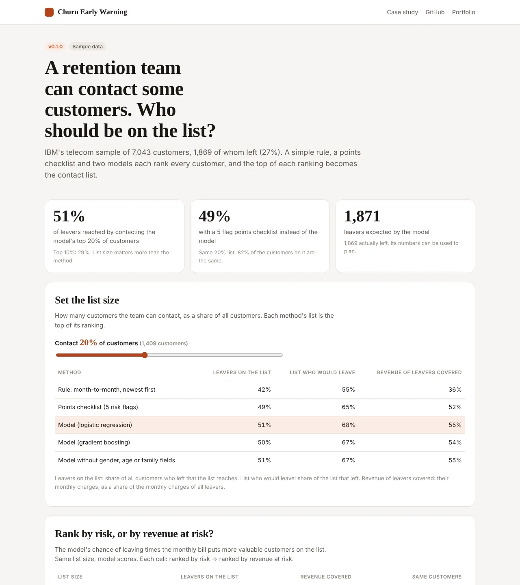

The question
Who should be on a retention list of a fixed size, and how much does a churn model add over a rule or a checklist the team could write itself?

Headline numbers
| Contact 20% of customers | Leavers reached | List who left |
|---|---|---|
| Rule: month-to-month, newest first | 42% | 55% |
| Points checklist (5 flags) | 49% | 65% |
| Gradient boosting | 50% | 67% |
| Logistic regression | 51% | 68% |
IBM Telco churn sample, 1,869 of 7,043 customers left. Each customer scored by a model that never saw them.
Findings
List size matters more than the method
Going from 10% to 20% of customers lifts the model from 29% to 51% of leavers. Going from the checklist to the model adds 2 points.
Personal fields add nothing
Without gender, the senior citizen flag and family fields, the model ranks the same. So they can be left out.
The model's numbers can be used to plan
It expected 1,871 leavers. 1,869 left.
The list misses longer-term customers
Leavers it misses have a median of 22 months as customers, against 5 for those it reaches. Usage or complaint signals might find them. This data has none.
What I would do next
- Repeat on data with history over time: score one month, check who leaves in the next.
- Add usage and support signals for longer-term customers.
- Run a holdout test to measure how many contacted customers are actually saved.
Sample data from IBM (Apache 2.0), one snapshot. Not a real company's results.